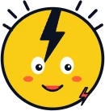
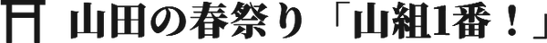

スキーマのAI研究所は、株式会社スキーマの84kenが、自分が知りたい・欲しい・たのしいという私利私欲のままに、AIといっしょにつくっているサイトやツールの置き場です。
電気風呂、パンク、温泉、サウナ、祭り、川、子どものゲーム。好きなことと気になることを、思いついたそばから形にしています。どれも実験中。完成していないものもあります。
Fig. 1Thought field — 24 strands rising from a single head.
↑ Hover a word — its color flows into the head. 言葉にふれると、色が頭の中へ流れ込みます。
私利私欲のまま、実験する。
Selfish curiosity,
experiments in progress.
スキーマの84kenが
私利私欲のまま実験している場所です。
A place where 84ken of Schema experiments, purely out of selfish curiosity.
運営：株式会社スキーマ llschema.com ↗
Lab note
仕事でも、
頼まれごとでもなく。
スキーマのAI研究所は、株式会社スキーマの84kenが、自分が知りたい・欲しい・たのしいという私利私欲のままに、AIといっしょにつくっているサイトやツールの置き場です。
電気風呂、パンク、温泉、サウナ、祭り、川、子どものゲーム。好きなことと気になることを、思いついたそばから形にしています。どれも実験中。完成していないものもあります。
08 specimens

Exp. 01Map / Sento
全国の電気風呂を、メーカー・最寄り駅・パワーで探せるマップ。しくみや歴史の読みものも。
denki.schema.tokyo
Exp. 02Culture / Music
77パンクからUKハードコア、Oi!、メロコアまで。パンクのディスクレビューとカルチャーガイド。
totalpunks.schema.tokyo
Exp. 03Study / Onsen
成分表で読む、自分に効く温泉。泉質・適応症・成分表の読み方をまとめた学習ノート。
onsen.schema.tokyo
Exp. 04Product / Sauna
流体力学から設計した、埼玉県産木材の「常軌を逸した蒸気」のサウナ小屋。
italog.schema.tokyo

Exp. 05Local / Chichibu
秩父路に春を告げる最初の屋台祭り、恒持神社例大祭。山組のガイドとしきたり。
matsuri.schema.tokyo
Exp. 06Local / Atlas
埼玉の流域・源流・高低差・ダムを3D地形で俯瞰する、リバサポ新サービスのプロトタイプ。
river.schema.tokyo
Exp. 07Game / Study
ちきゅうを すくうのは きみの しゅくだい。宿題で戦う、子ども向けの学習RPG。
game.schema.tokyo
Exp. 08Game / Kids
子どもが絵と声でアイディアを出し、AIといっしょにつくったゲームの展示室。
childgame.schema.tokyo